GIS support services at Mann Library
Keith Jenkins
GIS Librarian
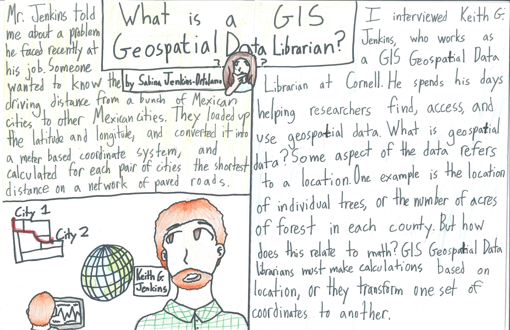
GIS Help Desk
Weekdays 2-4 pm
Walk-in or by appointment
How may we help you?
troubleshoot GIS software 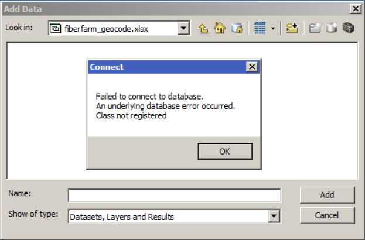
troubleshoot projections 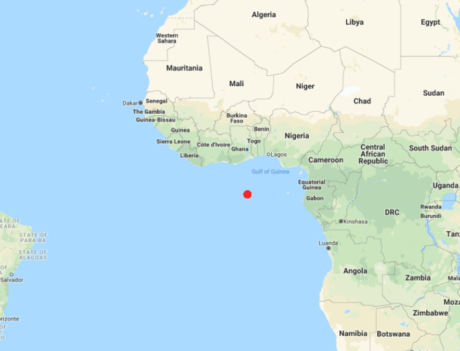
convert data 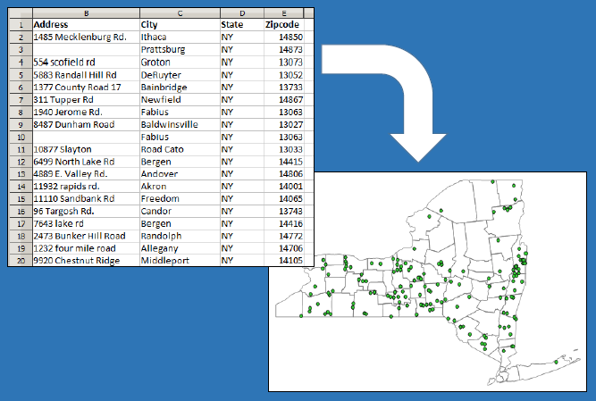
restructure data 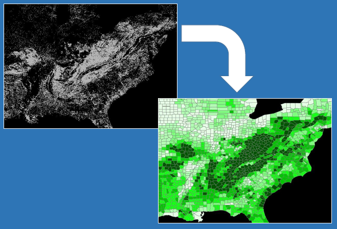
finding the right tool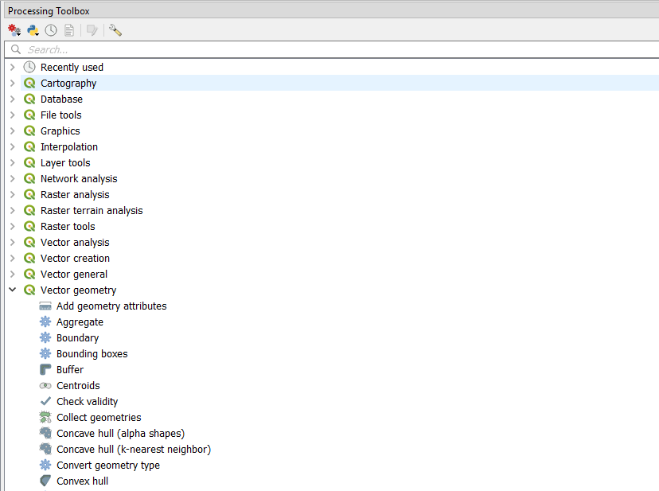
SQL 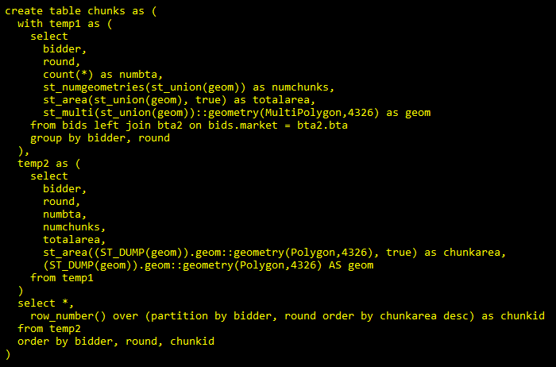
SQL 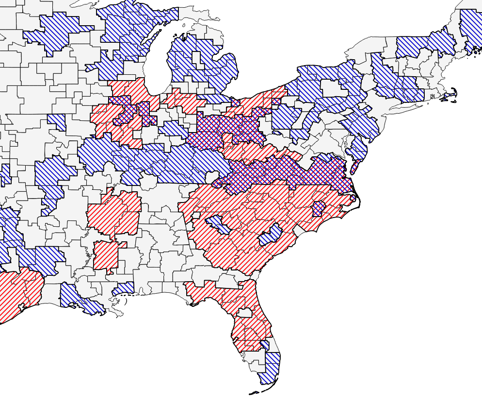
cartography 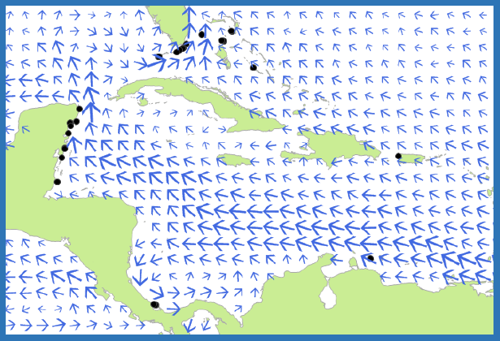
cartography 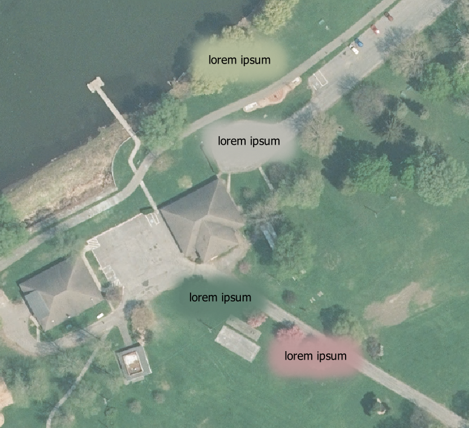
cartography 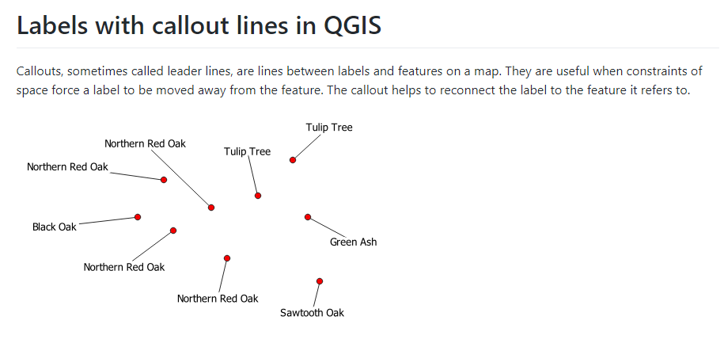
Finding data
special workshops for courses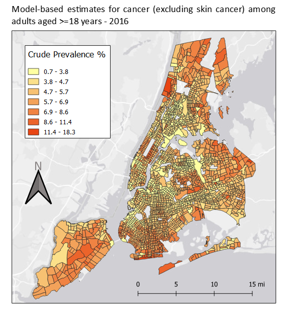
GIS software on public computers
QGIS, ArcMap, ArcGIS Pro
also Google Earth Pro, R, RStudio, Tableau
future plans